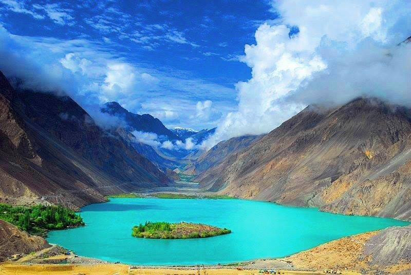
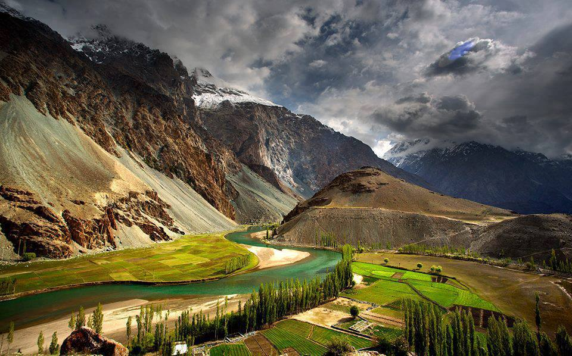

Gilgit
.

Gilgit Lake
Beautiful Lake in Gilgit

Gilgit Valley
A Beautiful Valley in Gilgit
.
Beautiful Lake in Gilgit
A Beautiful Valley in Gilgit
Gilgit is a very beautiful place to visit. Below are some pictures in which we can clearly see scenic beauty.
Gilgit is the Capital city of Gilgit-Baltistan, an administrative territory of Pakistan. The city of Gilgit constitutes a tehsil within Gilgit District. The city's ancient name was Sargin, later to be known as Gilit, and it is still referred to as Gilit or Sargin-Gilit by local people. In the Burushaski language, it is named Geelt and in Wakhi and Khowar it is called Gilt. Ghallata is considered its name in ancient Sanskrit literature.

Gilgit city is one of the two major hubs for all mountaineering expeditions in Gilgit-Baltistan. Almost all tourists headed for treks in Karakoram or Himalaya Ranges arrive at Gilgit first. Gilgit is served by the nearby Gilgit Airport. Many tourists choose to travel to Gilgit by air, since road travel between Islamabad and Gilgit, by the Karakoram Highway, takes 14 to 24 hours, whereas the air travel takes a mere 55 to 60 minutes.
Here are several tourist attractions relatively close to Gilgit: Naltar Valley with Naltar Peak, Hunza Valley, Nagar Valley, Fairy Meadow in Raikot, Shigar town, Skardu city, Haramosh Peak in Karakoram Range, Bagrot-Haramosh Valley, Deosai National Park, Astore Valley, Rama Lake, Juglot town, Phunder village, Yasin Valley, Kargah Valley Rahimabad Valley and nomal, Gilgit Baltistan.